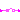

Library of partial blocks for components with clocked Boolean signals
This package contains partial blocks that are used to construct blocks operating on clocked Boolean signals.
Extends from Modelica.Icons.InterfacesPackage (Icon for packages containing interfaces).
| Name | Description |
|---|---|
| Basic graphical layout of block used for sampling of Boolean signals | |
|  PartialSISOSampler | Basic block used for sampling of Boolean signals |
| Block with clocked single input and clocked single output Boolean signals | |
| Block with clocked single output Boolean signals |
 Modelica_Synchronous.BooleanSignals.Interfaces.SamplerIcon
Modelica_Synchronous.BooleanSignals.Interfaces.SamplerIconBasic graphical layout of block used for sampling of Boolean signals
 Modelica_Synchronous.BooleanSignals.Interfaces.PartialSISOSampler
Modelica_Synchronous.BooleanSignals.Interfaces.PartialSISOSamplerBasic block used for sampling of Boolean signals
Extends from Modelica_Synchronous.BooleanSignals.Interfaces.SamplerIcon (Basic graphical layout of block used for sampling of Boolean signals).
| Name | Description |
|---|---|
| u | Connector of continuous-time, Real input signal |
| y | Connector of clocked, Real output signal |
Block with clocked single input and clocked single output Boolean signals
Extends from Modelica_Synchronous.ClockSignals.Interfaces.ClockedBlockIcon (Basic graphical layout of block where at least one input or output is a clocked variable).
| Name | Description |
|---|---|
| u | Connector of clocked, Real input signal |
| y | Connector of clocked, Real output signal |
Block with clocked single output Boolean signals
Extends from Modelica_Synchronous.ClockSignals.Interfaces.ClockedBlockIcon (Basic graphical layout of block where at least one input or output is a clocked variable).
| Name | Description |
|---|---|
| y | Connector of clocked, Real output signal |